Works
オリジナル作品をご紹介します。
Haya’s Portfolio
転職を機に、制作期間２週間を費やし、当ポートフォリオサイトを作りました。 各セクションをページごとに分けるのではなく、一つのLPにまとめました。 加えて、各セクションに行きやすくするため、ナビゲーションバーを固定したり、スクロールボタンを設置したり工夫を凝らしました。 また、コンテンツの出現時やホバー時が動的になるように仕上げました。
言語・技術
【言語】HTML, CSS, JavaScript, jQuery【技術】レスポンシブデザイン、CSSフレームワーク（Materialize)、アニメーション(Animate on scroll library)
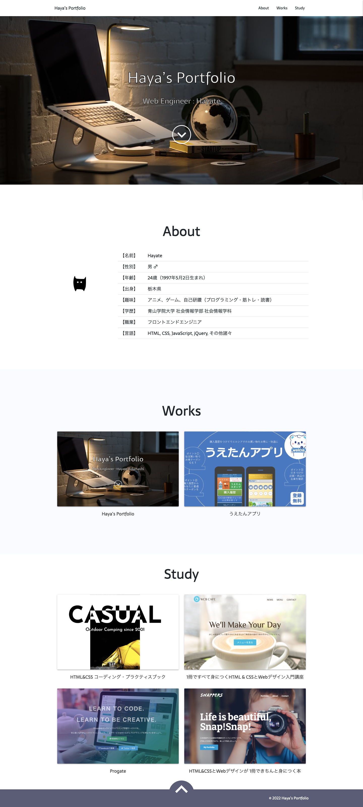
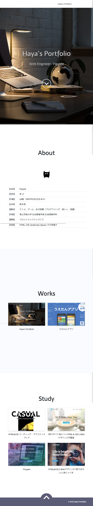
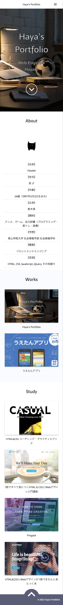


 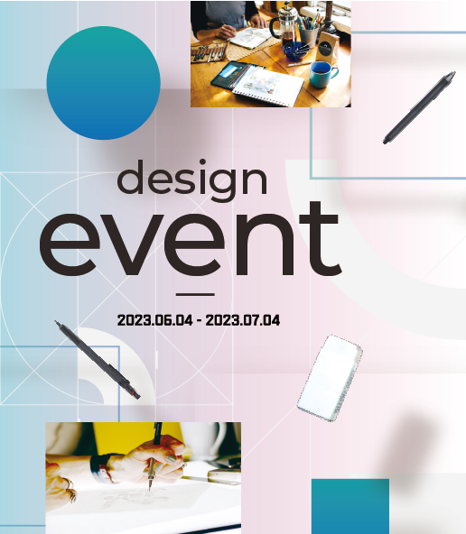
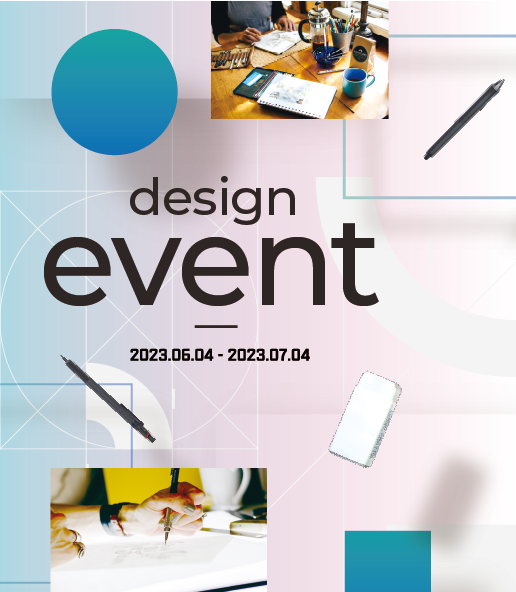

 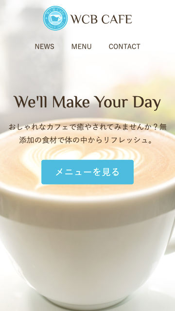
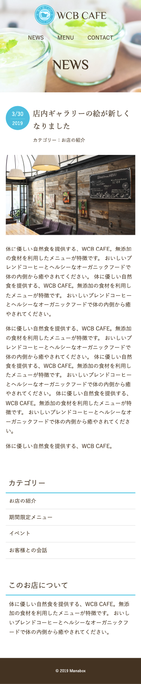
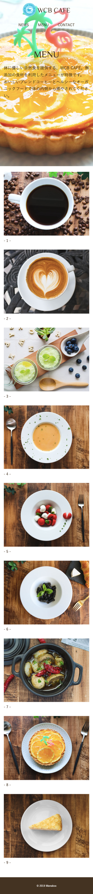
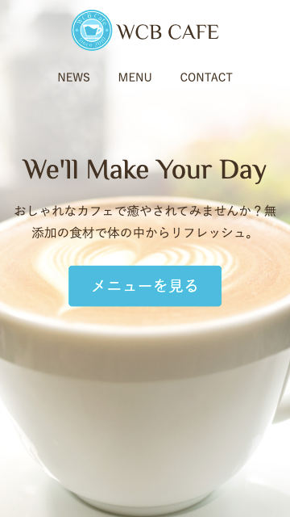
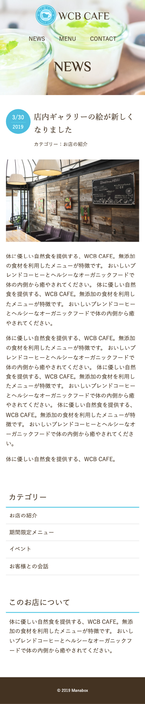
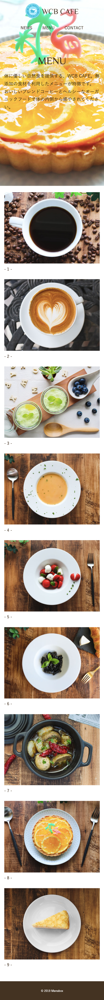

 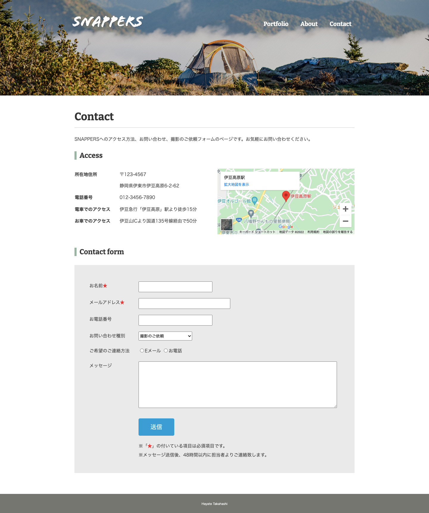
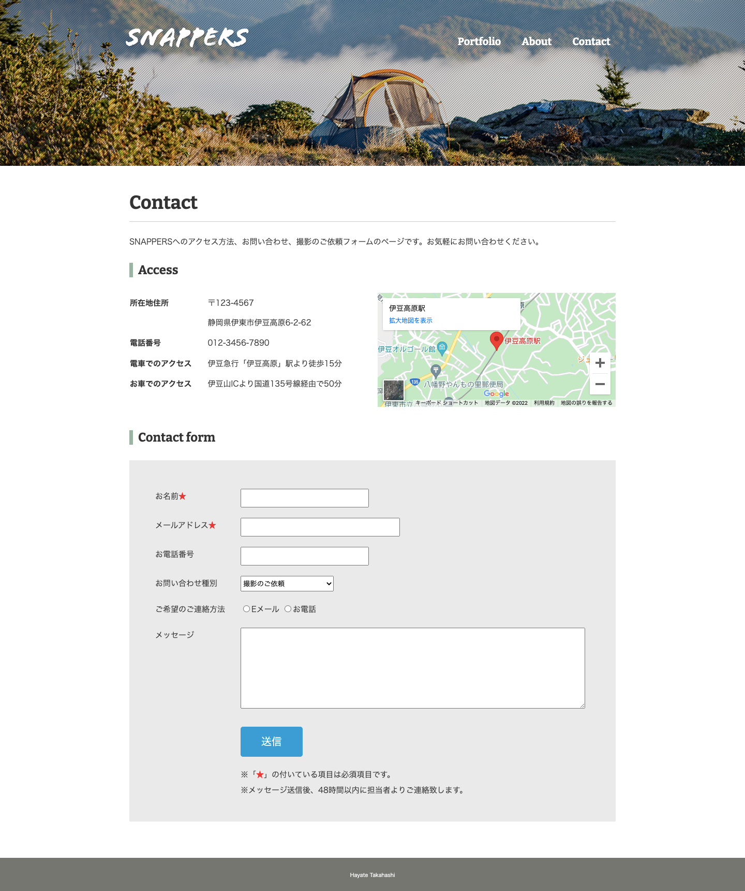